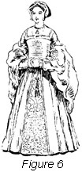

1926—The New-Way Course in Fashionable Clothes-Making
Lesson 37—Design Through the Ages
A Study of Dress Design
What is design? Does it mean merely the creating of a new style—the adding of a panel or a drape or a new kind of trimming? Does it mean merely something "different," something individual? No—design is something a great deal more intrinsic, a great deal more vital than all of these.
Have you ever seen a picture of the Cathedral of Milan with its slender spires reaching into heaven? Have you ever seen a picture of the famous Cathedral of Rheims—one of the world's miracles of beauty? In these two magnificent structures we see design in one of its most beautiful and powerful forms. Just as fashion determines the style of each season, so does fashion also decree the architecture of each generation. For it is fashion that dominates design—fashion that makes, shapes, models, adorns and adapts.
We know that it was fashion that decreed Gothic architecture of the Middle Ages. And fashion also determined the Doric, the Corinthian, the Roman forms of architecture. Fashion means form and design means form. We wear form, see form, our likes and dislikes are governed by form. Design models and adapts form in many new and interesting ways.
Dress, therefore, is only one of the forms in which fashion finds expression. There are countless creators of form, or design. The author with his pen, the painter with his brush, the sculptor with his chisel—the dressmaker with her shears and needles—all are creators of the beautiful, all are artists in design.
The Fascination of Dress Design
The study of dress is a beautiful one. The study of dress design is as fascinating as it is beautiful. Every normal woman loves beautiful clothes, and it is but natural that her artistic tastes should find expression through the medium of dress.
As a beginner in clothes-making, you may have found the study of seams and hems and construction details rather dull and perhaps the least bit difficult. But now, in the study of dress creation possibilities of pleasure will be opened up to you such as you never dreamed the study of dress offered.
There is a saying that dress design is "life expressed in clothes." How true this is! Place a beautiful gown on a model and look at it for two minutes. No matter how exquisite the gown may be, you will tire after two or three seconds. But put that same gown on a woman for whom it is suited and you will be able to look at it for a half-hour without tiring. This is because the woman has a distinct personality, she has little peculiarities of line and color which are blended with the lines and color of the gown. Each time she moves, each time she lifts her arm, we see life—life expressed in the lines and colors of the dress—"life expressed in clothes."
The woman who is ruled by fashion entirely is not a well-dressed woman. To worship at the pedestal of fashion, trembling to follow in haste each new style decree that is announced, is to dwarf one's originality and handicap one's sense of freedom. And freedom is the very essence of true design, of true style creating; the freedom to express oneself in line and color, to choose and make for ourselves apparel that is individual, attractive, suitable.
To be always well-dressed is one of the greatest assets a woman can have. And through the new principle of sewing and design, this is possible to the woman of limited means as well as to the woman who can spend a great deal of money on her clothes. By solving all the little intricacies of sewing, the NEW-WAY methods leave plenty of time for the woman in the home to devote to design—to the creating of fashion. while there are, of course, certain rules to which she must conform if she wishes to be modern in style, she may still be individual in her dress by developing silks and satins and the beautiful soft materials of today into artistic creations of her own conception.
We know that there are no two women made nearly alike enough to be equally well fitted by the same garment. This is true no matter what the prevailing fashion of dress may be. Therefore, the ready-made dress or skirt, cut for unknown and unseen figures, cannot be considered to always conform with the requirements either of design or good taste. Good taste in dress has frequently been compared to good taste in music—it must harmonize and mark the whole man or woman.
Fashion is full of whimsicalities. To express these whimsicalities in a manner harmonious to one's own personality is to master the principles of design.
Design as a Mean of Self-Expression
There is probably no more triumphant form of self-expression for woman than dress design. Always a lover of the beautiful and the becoming, she is able in the lines and colors of clothes to express her individual taste. She is able to enjoy a sense of freedom, to use the whole world as a source of design for her apparel.
If you were a student of architecture, you would find that the towering lines of a cathedral express a certain poetry. There is a poetry also in a well-moulded statue, in a beautiful painting. And this same poetry is to be found in the designing of beautiful clothes—a rhythmic beauty of line and meter such as one finds in an old Spanish song. Even the simple flowing robes of the early Grecians reveal this poetry of dress.
And it is because of this hidden poetry, because of the gratifying means of self-expression, that the study of design is so fascinating. To create clothes that are an artistic interpretation of oneself is to be conscious of all the triumphs a writer, or an artist, or an architect feels after creating a beautiful piece of work.
Design Through the Ages
It is impossible to make a complete study of design without going way back in the history of dress to the time when dress itself had its inception. The study of dress is, in truth, the study of civilization. In history certain epochs stand out as being turning points in the history of man—and each new era claims its own distinct mode in dress. And each era of costume had its influence on the costume of the ensuing era, so that each generation borrowed something in the way of line or form from the generation that went before.
So you see that in order to master design we must review the designs of other ages. We must, in fact, follow fashion through the ages, watching design surge forward with the development of art and beauty until it reaches its present highly developed form.
To give one specific instance: After the revolution in France the peasants of Paris plunged into a reckless round of gaiety. It was the natural outcome of love of life and laughter long pent up, and it was as though an avalanche of joyousness had been released. If you remember your history, you will know that it was the terror and nightmare of the two years of horror finding sudden relief. At last the people were free to do as they pleased, without the fear of being guillotined to restrain them.
Historians tell us that France went made with rejoicing. An eyewitness writes: "The room (formerly an aristocrat's drawing room) was a mass of swirling, twirling figures—men, women and children in weird, vivid clothes. It seemed natural that they should be dancing so wildly in their wild costumes in their sabots and aprons of two months ago, they would not have been able to take one step."
To study the dress of this era is to find immediately the source of the bright, gay dance costumes of today. That era in history had a distinct influence on dress, and that influence is still felt today. That is why, when you plan to design a new dance frock for yourself, you will instinctively choose a bright color and a gay style. If you study costume after the revolution, you will be able to design authoritatively, with a clear knowledge of artistic requirements.
A Short Study of Historic Costume
The complete study of fashion and design through the ages would alone fill a volume. We will just touch on the subject here—giving you enough information to create present-day styles with a definite knowledge of the influence of other ages. This study of fashion through the ages will also reveal to you the sources of design. Many are the "new, individual, Parisienne creations" offered to an expectant world of women today which are nothing more or less than adaptions of the gowns worn several generations ago!
It is not possible to begin at the very beginning and trace fashion from her first, feeble steps. Let us skip over the first few centuries when dress was still in an undeveloped stage and served more for a covering than an expression of beauty and art. we will begin at the twelfth century when costume first began to show interesting changes—changes which influenced costume and can be traced down to this very day.
Fig. 1 shows a costume of the twelfth century. The material is of some heavy woven thread—something like the serge we use today. Notice particularly the collar, bound and finished so neatly. The draped cape falls in soft folds and the sleeves are like our fitted sleeves of today. Note how evenly the parts of the body are divided and how clear the points of support at the shoulders and hips are.
A peep into the costume of the thirteenth century does not reveal striking changes. However, in this era we find that the tight bodice of the twelfth century has a tendency to disappear. In Fig 2, the French costume of the early thirteenth century is portrayed. Here we find the quiet, dignified lines that have a certain poetry of their own—a certain simple, rhythmic charm. Notice the soft draperies, the correct division of lines, the complete absence of ornamentation. As the gown is supported from the shoulders no decoration or ornamentation was necessary—hence the simplicity. This same dignified simplicity is found in early Greek and Roman costume which we will study in detail later. The influence of the thirteenth century, and of Grecian and Roman costumes are very definitely felt in the clothes of today.
In the fourteenth century, the long flowing lines are still in evidence but once again Fashion reverts to the tight bodice of the twelfth century. Fig. 3 shows an English woman of that period, wearing a velvet dress. It is interesting to see how closely the lines of the dress follow the lines of the waist and hips. In that era, the sleeves were very long and sometimes extended to about two inches below the wrists.
The costume of the fifteenth century is extremely interesting to the student of dress design. The influence of the Renaissance is evident in the dignity and simplicity of the lines. Remember that this is the period that immediately preceded the period of gaudy display and ostentation that Queen Elizabeth led. There is a certain empire suggestion in the cut of the dress of that period. (see Fig. 4) The puffed and slashed sleeves are a distinct style note—and if you remember, it was only a short while ago that puffed sleeves and slashed sleeves were worn with a great deal of pride and were considered entirely modern and ultra-fashionable
Queen Elizabeth set the pace for a period of gaudy display and rich decoration in the sixteenth century. Even peasants, in an effort to emulate their proud queen, wore the gayest and brightest aprons they could get. We are going to show you a picture of a lady of the court of that era, to show how lack of good taste and love of decoration wreak havoc with design and make the richest costume ugly. Glance at Fig. 5. The lady is wearing a dress of rich blue velvet, with huge sleeves of very fine net and brocade. While the sleeves are interesting because they portray a historic style note, they are entirely unsuited to the person who is wearing the gown. The dress is really a combination of ideas adopted from outside sources, instead of an expression of art in harmony with the figure. In that era, dresses were cut very high and skirts usually fell open in front revealing underskirts of great beauty. this embroidered underskirt is an important feature of sixteenth century costume and can be traced in present-day styles. Note that the tight bodice remains.
The costumes of the seventeenth century are very picturesque. This era is conspicuous for the passing of the ruff at the collar and cuffs, and the appearance of the wide, flat collar. Even if we leave Europe and study the garments worn in America for a moment, we find the flat collars of the Quakers and the draped kerchiefs of the early settlers of that period. A very popular vogue for plaits and tucks predominated in this era, and we find that in almost all countries the full, well-draped skirt is favored. Fig. 6 portrays the characteristic fashion of Europe in the middle of the seventeenth century. You will notice the simplicity of the flat collar. Later in the century, the trend was towards a greater use of decoration, and if we study the costumes of France we find a very distinct trend towards the empire cut.
Now let us make a survey of costume in the eighteenth century. This period in the history of costume is very interesting, for we find that there was a great deal of freedom in individual interpretation of art and beauty. In Fig. 7 notice the balance in cut and arrangement. Notice the good taste in material and in detail. Attention is directed to the points of support which are so clearly defined. The gown truly expresses the individuality of the wearer which indicates that it was designed with a correct knowledge of line, form and harmony. Later in the eighteenth century we find individuality further expressed by the creation of "male" attire for women—in England where women had grown to love such sports as riding, cricket and driving a certain masculine tendency in apparel is evident. Perhaps the severely tailored clothes of today had their inception in that "fad."
In the nineteenth century good taste gave way to ugliness, and individuality was crushed in the capricious desire to follow every whim of a stupid mode. There was a general tendency towards fussiness, towards gaudy ornamentation. Tucks and plaitings were used a great deal, and skirts were made so full that three dresses could now be made form the material used. In Fig. 8 you see an attempt of the impossible in design—an attempt to be individual without regard for unity or balance. The only interesting feature for the student of design is in the plaitings and flutings which are so reminiscent of our own trimmings today.
the nineteenth century good taste gave way to ugliness, and individuality was crushed in the capricious desire to follow every whim of a stupid mode. There was a general tendency towards fussiness, towards gaudy ornamentation. Tucks and plaitings were used a great deal, and skirts were made so full that three dresses could now be made form the material used. In Fig. 8 you see an attempt of the impossible in design—an attempt to be individual without regard for unity or balance. The only interesting feature for the student of design is in the plaitings and flutings which are so reminiscent of our own trimmings today.
The beginning of the twentieth century is interesting. Notice in Fig. 9 that the very tight bodice is still in vogue and that long, tight sleeves found favor. The high collar is of interest, though, as is also the embroidery trimming on the skirt and waist.
The Greek and Roman Influence
Before proceeding with a study of present-day costumes, in which the influence of historic costume is portrayed, let us make a general survey of early Greek and Roman costumes so that we can trace the influence of the Grecian mantle and Roman toga in our styles of today.
In Fig. 10 you see a typical Greek costume. Study it carefully. You know that the true aim of dress is to express beauty of the human form and at the same time make the garment artistic and beautiful. This beauty of the garment must be independent of the form on which it is worn—yet when worn it must blend with the lines and color of the wearer. In this illustration notice how the lines or divisions of the garment hang from the natural supports—the shoulder and hips. It is in the subtle form suggestion of the contour of the body that the greatest charm of Greek drapery lies. There is nothing superfluous in the way of decoration. The lines follow the lines of the body and fall in soft drapes that soften the lines and create an artistic whole.
Now glance at Fig. 11. Here you have a typical Roman costume, showing the simplicity and dignity of the era. The border of embroidery, classic in design, is of interest. Here also, the balance and mass divisions are splendid and the lines follow the lines of the body.
at Fig. 11. Here you have a typical Roman costume, showing the simplicity and dignity of the era. The border of embroidery, classic in design, is of interest. Here also, the balance and mass divisions are splendid and the lines follow the lines of the body.
This completes the historic study of costume in connection with your lesson on design. You have had a brief, general survey of the predominating features of the costumes of the important eras in history—you have been shown the Greek and Roman influences—and now you are ready to apply this knowledge to costumes of only a few years ago. Fig. 12.
Even though these dresses do not date back so many years, they help to give us an idea concerning the continual change of Fashion. Before reading any further, study these dresses carefully and see if you can trace the style influence in each one—whether it is the tight bodice, the full skirt or the Roman influence. Then, after you have tested yourself, read the following paragraphs and see how nearly correct you are.
Fig. A shows distinctly the Grecian influence in the skirt. Notice the softly falling drapery. Attention is particularly directed to the rose at the waistline which comes at the point of support and relieves the unattractive unbroken mass.
In Fig. B we have many features of historic dress carried out in a rather modern manner. First there are the slashed sleeves which predominated in the fifteenth century. There is the Grecian influence in the skirt, the balance division in front and the rigid adherence to the form. The collar had its origin in the standing ruff of the time of queen Elizabeth.
Now glance at C. No doubt you will recognize at a glance the Roman influence. There is the rope girdle and the embroidered borders. Attention is drawn to the draped skirt. This is a style which the large hipped woman can wear to advantage as it gives a soft smooth line over the hips.
Fig. D has a distinct sixteenth century influence. You can refer to the pictures of historic costumes and find the embroidered underskirts of the era, and the wide sleeves.
Why not look in magazines and find different style influences. This will help you a great deal and will be an interesting experiment to try, for if you can pick out several, you have really mastered this important part of your study of design. Of course, you always want to do that before taking up another part.